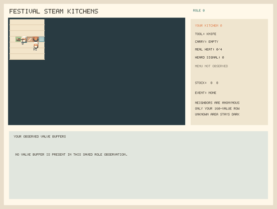
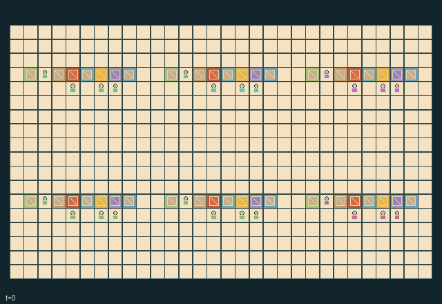

GI229 · Festival Steam Kitchens

Original recording scope: Role 0 saved observations; 513 discrete actual endpoints, without interpolation · Mode: Saved offline recording; not human-play or benchmark acceptance
Additional generated state replay (different trajectory / full-state debug)

Serve two orders from each of six kitchens using cooked, cooled food and physically recycled plates.
Identity and original contract
24 independently actionable roles; 23 discrete commands per role; 160 native observation columns per role; original horizon 512 steps. Declared per-step reward range: -32 to 32. Observation regime: partially_observable.
Source SHA-256: 97209e05ff4bc4806ce64dc4b090707c2c39e4874da15eae748c9af2ad077583
The objective, rewards, population, map and horizon remain original. A preview is not a success claim.
Objective and gameplay
Serve two orders from each of six kitchens using cooked, cooled food and physically recycled plates.
Valve siphoning reduces steam forwarded two buffers later to the next kitchen. Meals consume a clean plate; serving emits a blocking dirty-dish cart that must be retrieved, washed and returned to a pot. Ingredient substitutions change quality; tools and carried food can pass between adjacent workers.
- Each of six kitchens has four separate actors: preparer, steamer, runner and engineer. Selecting a person means selecting its original native action row.
- Colored counters are physical obstacles: pantry, board, pot, cooling rack, hatch, valve and sink. Turn toward a counter before interacting.
- Use a knife to prepare roots or beans. A clean plate and prepared ingredient enter an empty pot; tongs or a tray lift the hot meal once progress reaches 4.
- Carried heat falls one per tick. A zero-heat hot meal still needs the cooling-rack action before serving.
- Serving the requested ingredient has quality 2; a substitution has quality 1. Only workers next to the hatch can read its current menu and deadline.
- A served plate becomes a dirty dish cart in the lane. Push or pick it up, wash it at a sink, then return the clean plate to a pot.
- An open valve draws at most two steam units. Unused steam advances through two buffers to the next kitchen; valve choices change downstream timing.
- This source-bound kitchen scene and its literal scripts have not been run. Native animation, human play, causal effects and learning remain unverified.
Ending: Terminate once all six served counters reach 2; otherwise truncate at t=512. Expired orders reset their deadline and incur native loss; they do not reset the world.
What this game explores
Resource commons & externalities: An action changes a persistent resource or burden that another role also encounters. Compare extraction with maintenance and record the downstream resource trajectory.
Complementary production & service: A useful outcome requires ordered stages, scarce equipment or another role's capability. Measure real completed products and resource circulation rather than counting intermediate actions as success.
Joint transport & shared access: Positions, load geometry, occupancy and persistent access constrain whose action can succeed next. Distinguish physical handoff, shared controls and simultaneous force from a cosmetic cooperation label.
These are questions supported by rule structure, not observed learning effects.
Play it: operating walkthrough
crucibles play --game gi229Keep Python running and open its printed address. Select this game, set a seed and press Create session. The game itself is always English.
Assign a role range to Host with Assign / take over, or Assign all roles. Invite a second participant with Create player invitation, then assign a disjoint subset. Every original role is available.
For every owned role choose a legal command and press Queue. Arrow keys / WASD queue a declared directional action for the current role camera when available. Space or Advance one joint step advances everyone together. Non-directional games use the selectors.
Unqueued roles use the labelled untrained uniform-legal policy. Take over or release roles before the next step without resetting. Full-state debug is privileged and permanently logged; role cameras preserve permissions. Close the session to retain logs. Server restart does not restore sessions.
Complete command reference
IDs and English labels exactly match the manifest. Availability depends on role, resources, location and phase. An available action can still have no productive effect.
0·Wait; no movement
1·Move north
2·Move east
3·Move south
4·Move west
5·Face north
6·Face east
7·Face south
8·Face west
9·Collect root ingredient at facing pantry
10·Collect bean ingredient at facing pantry
11·Chop carried raw ingredient with knife at board
12·Load prepared ingredient or clean plate into facing empty pot
13·Take cooked meal with tongs or tray
14·Finish cooling at rack after carried heat reaches zero
15·Serve cooled meal at facing menu station
16·Toggle steam valve using wrench
17·Hand carried item to empty-handed actor ahead
18·Swap tools with actor ahead
19·Wash carried dirty dish at sink using local water
20·Pick up facing dish cart contents
21·Push facing dish cart one clear cell
22·Signal readable order, or generic request
Roles and capability identifiers
These original role names describe capabilities, not interchangeable skins. Check each owned role's legal selector before planning handoffs.
agent_0·group 0 / knife preparer
agent_1·group 0 / tongs steamer
agent_2·group 0 / tray runner
agent_3·group 0 / valve engineer
agent_4·group 1 / knife preparer
agent_5·group 1 / tongs steamer
agent_6·group 1 / tray runner
agent_7·group 1 / valve engineer
agent_8·group 2 / knife preparer
agent_9·group 2 / tongs steamer
agent_10·group 2 / tray runner
agent_11·group 2 / valve engineer
agent_12·group 3 / knife preparer
agent_13·group 3 / tongs steamer
agent_14·group 3 / tray runner
agent_15·group 3 / valve engineer
agent_16·group 4 / knife preparer
agent_17·group 4 / tongs steamer
agent_18·group 4 / tray runner
agent_19·group 4 / valve engineer
agent_20·group 5 / knife preparer
agent_21·group 5 / tongs steamer
agent_22·group 5 / tray runner
agent_23·group 5 / valve engineer
Information and observation permissions
Local 7x7 terrain/occupancy, self inventory, and three detailed nearby actors. Menus are private to Manhattan distance 1 until relayed as coarse messages over distance 6. Pot/valve state is local. No remote order list is shown.
The GIF is full-state debug and may reveal hidden entities or private state. Train on obs[agent], not the picture, state tree or another role's private row. Field slices and visibility are in the original manifest.
Reinforcement-learning integration
import jax
from crucibles_jaxmarl import make
env = make("gi229")
key = jax.random.PRNGKey(0)
key, rk, ak, sk = jax.random.split(key, 4)
obs, state = jax.jit(env.reset)(rk)
actions = env.sample_actions(ak, state)
obs, state, rewards, dones, info = jax.jit(env.step_env)(sk, state, actions)
done = dones["__all__"]Observations are float32 vectors of width 160; actions are scalar int32; masks have 23 entries. Supply all 24 roles each transition. Masked sampling is an engineering reference, not a trained learner.
step_env retains terminal data without reset. step performs outer autoreset and keeps terminal data in info["raw_state"] and info["raw_observation"]. Use dones["__all__"] for episode boundaries; separate completion, failure and time limit in analysis.
JIT or vmap equal identities and shapes. Split independent reset, policy and transition keys. Group different shapes explicitly; do not shrink the population or horizon. Host rendering stays outside training.
Training questions and fair evaluation
Define valid completion from the objective before fitting. Preserve original rewards and also report real deliveries/services, losses, resource state, unresolved episodes and per-role returns. Animation is not a reward signal.
An action changes a persistent resource or burden that another role also encounters. Compare extraction with maintenance and record the downstream resource trajectory.
A useful outcome requires ordered stages, scarce equipment or another role's capability. Measure real completed products and resource circulation rather than counting intermediate actions as success.
Positions, load geometry, occupancy and persistent access constrain whose action can succeed next. Distinguish physical handoff, shared controls and simultaneous force from a cosmetic cooperation label.
Compare memory, communication or centralized critics under matched actor information. Declare critic access; keep actor inputs role-filtered. Match partner/opponent distributions, masks, compute and checkpoint selection. Final tests never enter fitting or selection.
Independent training runs or source-pairing blocks are inferential units; episodes from one policy are not independent training replications. Save hashes, keys, versions, device, time and cost. Negative, zero, failed and indeterminate outcomes are valid. No trained checkpoint or target score is supplied.
Classification and evidence
Overlapping editorial labels are reading aids, not proof of novelty, difficulty, strategic equivalence or learning effects.
- Resource commons & externalities
- Evidence
manifest.actions.14: Finish cooling at rack after carried heat reaches zero
- Evidence
manifest.actions.19: Wash carried dirty dish at sink using local water
- Evidence
scene.rules.3: Carried heat falls one per tick. A zero-heat hot meal still needs the cooling-rack action before serving.
- Complementary production & service
- Evidence
manifest.task.objective: Serve two orders from each of six kitchens using cooked, cooled food and physically recycled plates.
- Evidence
manifest.task.interaction: Valve siphoning reduces steam forwarded two buffers later to the next kitchen. Meals consume a clean plate; serving emits a blocking dirty-dish cart that must be retrieved, washed and returned to a pot. Ingredient substitutions change quality; tools and carried food can pass between adjacent workers.
- Evidence
manifest.task.observation_access: Local 7x7 terrain/occupancy, self inventory, and three detailed nearby actors. Menus are private to Manhattan distance 1 until relayed as coarse messages over distance 6. Pot/valve state is local. No remote order list is shown.
- Joint transport & shared access
- Evidence
manifest.task.interaction: Valve siphoning reduces steam forwarded two buffers later to the next kitchen. Meals consume a clean plate; serving emits a blocking dirty-dish cart that must be retrieved, washed and returned to a pot. Ingredient substitutions change quality; tools and carried food can pass between adjacent workers.
- Evidence
manifest.actions.11: Chop carried raw ingredient with knife at board
- Evidence
manifest.actions.14: Finish cooling at rack after carried heat reaches zero
Source, receipts and preview limits
The additional generated state GIF replays saved untrained legal actions through the original kernel. At most 25 actual endpoints include initial and terminal state; no invented interpolation. It is full-state debug, not the role observation. Where an original scene preview exists, it is displayed first with its own recorded information scope. The two recordings may use different trajectories and views.
Original source, observation slices, manifest and mechanism
Native receipt · Presentation receipt
Engineering passes do not establish learning. Nonzero floating differences remain recorded and undetermined; no new tolerance was introduced. Human scores remain unverified.
Complete original saved replays
Download original endpoints and standalone players
All eleven GI226/227 tracks and six GI229 tracks retain failures, zero effects and numerical uncertainty. Older instructional panels are archival content.